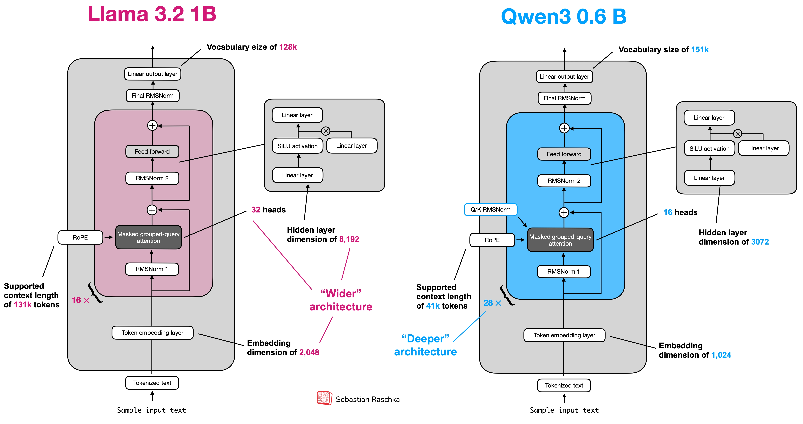
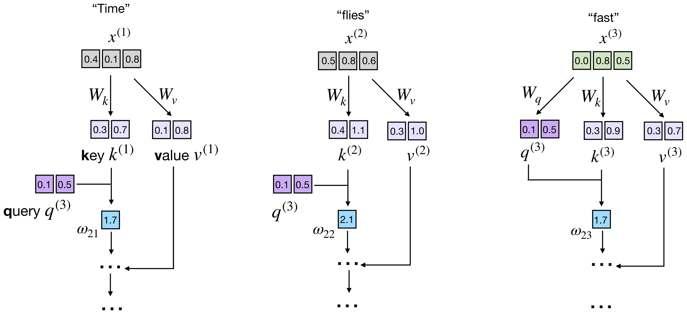
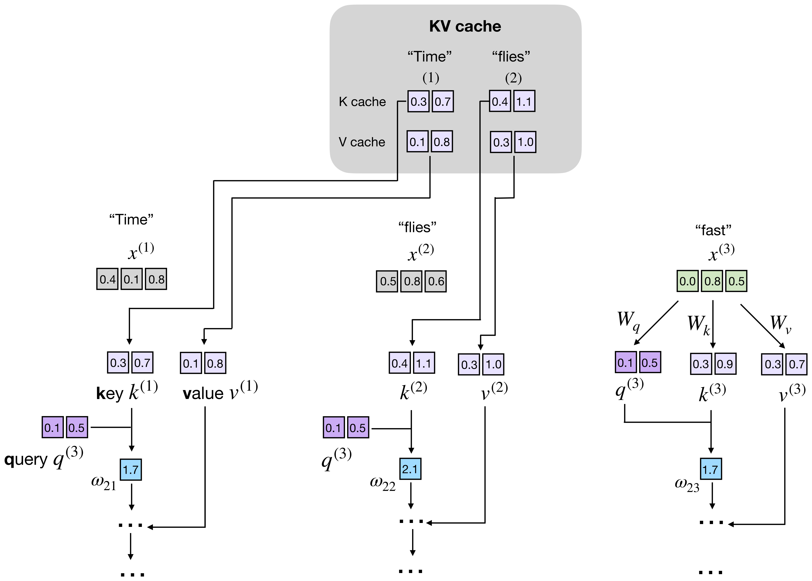
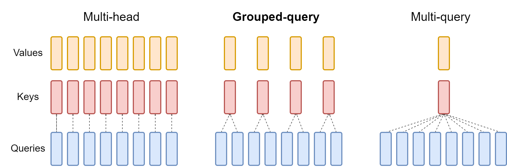

로컬 LLM 추론 실험실
MacBook에서 Qwen3-0.6B를 직접 돌리며 배우는 KV 캐시와 최적화
Qwen3 0.6B — 더 깊고 좁은 구조

출처: Sebastian Raschka, “Qwen3 From Scratch”, LLMs-from-scratch (github.com/rasbt/LLMs-from-scratch)
왜 첫 토큰만 느릴까? — KV 캐시
같은 이야기, 텐서 관점 — 캐시 없음 → KV 캐시


캐시 없음
KV 캐시
출처: Sebastian Raschka, “Understanding and Coding the KV Cache in LLMs from Scratch” (2025), Fig. 5–6, magazine.sebastianraschka.com
GQA — 쿼리 헤드 여러 개가 K, V를 나눠 쓴다

- Qwen3-0.6B: Q 헤드 16개, KV 헤드 8개 → 두 Q 헤드가 한 K, V를 공유 (그룹 크기 2)
- KV 캐시는 KV 헤드 수에 비례 → MHA였다면 2배 (토큰당 112 KiB → 224 KiB)
- 코드: 캐시에는 8헤드만 저장하고, attention 직전에 repeat_interleave로 16헤드에 맞춘다 (model.py)
출처: Ainslie et al., “GQA: Training Generalized Multi-Query Transformer Models from Multi-Head Checkpoints” (2023), Fig. 2 · CC BY 4.0
Decode는 계산이 아니라 메모리 읽기가 병목

- 토큰 하나를 만들 때마다 가중치 전체와 KV 캐시를 메모리에서 읽는다
- 요청 1개(batch 1)면 읽은 바이트당 계산이 적다 → 그래프 왼쪽, 대역폭 구간
- 그래서 decode 속도 상한 ≈ 대역폭 ÷ 읽는 바이트
- Prefill은 한 번 읽은 가중치로 토큰 T개를 계산 → 계산 병목 쪽
출처: Aleksa Gordić, “Inside vLLM: Anatomy of a High-Throughput LLM Inference System” (2025), aleksagordic.com/blog/vllm